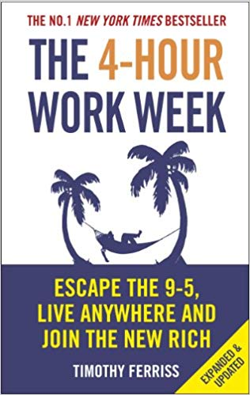

12 Rules for Life: An Antidote to Chaos is a 2018 self-help book by
Canadian clinical psychologist and psychology professor Jordan Peterson.
It provides life advice through essays on abstract ethical
principles, psychology, mythology, religion, and personal anecdotes.

The 4-Hour Workweek: Escape 9–5, Live Anywhere, and Join the
New Rich is a self-help book by Timothy Ferriss, an American writer,
educational activist, and entrepreneur.
Beyond Good and Evil: Prelude to a Philosophy of the Future is a
book by philosopher Friedrich Nietzsche that expands the ideas of
his previous work Thus Spoke Zarathustra with a more critical and
polemical approach. It was first published in 1886.
Dora and her best friend, Boots, go on more adventures than
you can count. Now Dora fans can enjoy many of
their favorite Dora stories all in one book!
The Testaments is a 2019 novel by Margaret Atwood. It is a sequel
to The Handmaid's Tale. The novel is set 15 years after the events
of The Handmaid's Tale. It is narrated by Aunt Lydia, a character
from the previous novel; Agnes, a young woman living in Gilead;
and Daisy, a young woman living in Canada.